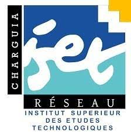

<script>
    document.addEventListener('DOMContentLoaded', function() {
      var movingPhoto = document.getElementById('isetch');
      movingPhoto.style.transform = 'translateX(100px)'; 
    });

    document.addEventListener('DOMContentLoaded', function() {
      var movingText = document.getElementById('ist');
      movingText.style.transform = 'translateX(0px)'; /* Adjust the value based on how much you want it to move */
    });

    document.addEventListener('DOMContentLoaded', function() {
      var movingText = document.getElementById('article');
      movingText.style.transform = 'translateX(0px)'; /* Adjust the value based on how much you want it to move */
    });

    document.addEventListener('DOMContentLoaded', function() {
      var movingText = document.getElementById('footer');
      movingText.style.transform = 'translateX(0px)'; /* Adjust the value based on how much you want it to move */
    });
  </script>
<header>

    
<h1 id="ist">INSTITUT SUPÉRIEUR DES ETUDES TECHNOLOGIQUES DE CHARGUIA</h1>
</header>
<article id="article">
    <p>About ISET CHARGUIA:</p><br>
    <ul>
         L’Institut Supérieur des Etudes Technologiques de CHARGUIA a été crée en vertu du Décret n° 2000-981 en date du 11 mai 2000. 
    Il relève de la Direction Générale des Etudes Technologiques du Ministère de l’Enseignements Supérieur.<br>

L’ISET-CHARGUIA compte quatre départements :<br><br>
<ul>
<li>    Administration des Affaires<br></li>
<li>    Technologies informatique<br></li>
</ul><br>


L’enseignement se déroule dans des locaux situés en plein cœur d’une zone industrielle et d’affaire la CHARGUIA II. 
Ils sont équipés d’une bibliothèque, de plusieurs Laboratoires d’informatique avec une connexion à l’Internet accessible et fonctionnelle et d’une salle d’enseignements à distance.<br><br>

L’objectif fondamental recherché est l’employabilité des diplômés de l’ISET CHARGUIA, rendu possible grâce à plusieurs atouts :<br><br>
<ul>
<li>    Une formation ciblée, correspondant à des besoins réels.<br></li>
<li>    Une connaissance concrète du monde des entreprises et des affaires, assurée au cours du cursus.<br></li>
<li>    Une collaboration régulière des professionnels à l’élaboration des programmes et à la formation.<br></li>
<li>    Enfin les diplômés de l’ISET peuvent, par voie de concours, accéder aux Ecoles d’Ingénieurs ou aux Facultés et y poursuivre des études.<br></li>
</ul>
</ul>
</article>
<footer id="footer">
    <p><span>Adresse : </span>47, Rue des Entrepreneurs Charguia II - 2035 Tunisie<br><br>
    <span>Tél :</span>(+216) 71 940 322 / 71 940292<br><br>
    <span>Email :</span>service2stages@gmail.com</p>
</footer>